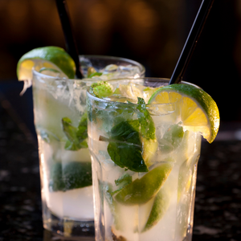
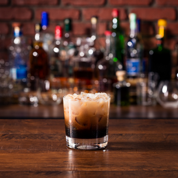
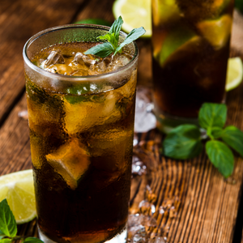
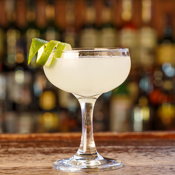
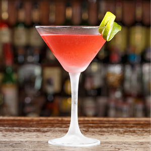

| Cocktail Alcolici | ||
|---|---|---|
| Mojito  |
Il Mojito è un famoso cocktail alcolico originario di Cuba. Il mix di rum bianco, foglie di menta e succo di lime, incontrano alla perfezione lo zucchero di canna integrale che rende dolce questo drink… perfetto per le serate estive! Ingredienti:
Preparazione:Per preparare il mojito iniziate versando in un bicchiere da long drink (tumbler alto) le foglie di menta e lo zucchero di canna; servendovi di un pestello schiacciatele contro il lato del bicchiere così da sprigionare l’aroma della menta. Aggiungete il succo di lime (circa 1/5 della bibita) e pestate ancora per qualche secondo, poi riempite il bicchiere di ghiaccio (a cubetti o tritato), aggiungete il rum, l’angostura e in ultimo uno spruzzo di acqua gassata (o soda); mescolate in modo circolare e servite decorando con un rametto di menta. |
|
| White Russian  |
Il White Russian è un cocktail molto forte a base di vodka. Questo drink nato come variazione del classico Black Russian, ha un’alta graduazione alcolica e solitamente viene servito dopo i pranzi e le cene. Da provare! Ingredienti:
Preparazione:Cominciate versando 2-3 cubetti di ghiaccio ( fino a riempire i 3/4 del bicchiere ). Unite 5cl di vodka liscia e 2cl di liquore al caffè. Mescolate con un cucchiaino e tenete da parte. Versate la panna fredda nello shacker e chiude con la coppa più piccola, agitando per qualche secondo cosi da ottenere un composto più gonfio. Colpite la coppetta per staccarla da quella più grande e posizionate lo stainer sullo shaker. Filtrate la panna versandola nel bicchiere e il drink è pronto. |
|
| Cuba Libre  |
Il Cuba Libre è perfetto da sorseggiare durante le calde serate estive. Questo cocktail infatti, grazie all’unione tra Coca Cola e rum risulta poco alcolico, fresco e dissetante. Ingredienti:
Preparazione:Si prepara direttamente in un bicchiere highball. Spremete il lime( o limone) e filstrate e versate il ghiaccio nel bicchiere. Dopodichè aggiungete rum e il succo, completando poi con la cola per poi mettere la fetta di lime. |
|
| Margarita  |
Il Margarita è un cocktail che risale agli anni 30/40, quindi abbastanza recente rispetto agli altri. In questo drink la tequila sposa alla perfezione il liquore all’arancia e il succo di lime, garantendo così un risultato davvero perfetto!Ingredienti:
Preparazione:Spremete il succo di lime e versatelo in una bacinella bassa e larga. Intigetevi il bordo della coppa Margarita capovolta(conservate il succo). Successivamente, sempre a coppa capovolta, appoggiate il bordo in un piattino di sale fino, in modo che si crei una crostician di sale. Riempite lo shaker di ghiaccio e versate la tequila e il triple sec e infine il succo di lime. Shakerate il cocktail e filtratelo nella coppa con l'ausilio dell'apposito strainer. Tagliate una fettina di lime, incidetelo leggermente per applicarlo sul bordo del bicchiere, cosi da decorare il vostro drink. |
|
| Cosmopolitan  |
Il Cosmopolitan, oltre ad essere il nome di una famosa rivista di moda, è il cocktail perfetto per ogni donna di città che si rispetti. Vodka, liquore all’arancia e succo di cranberry (i mirtilli rossi americani) sono gli ingredienti principali con i quali realizzare questo buonissimo drink! Ingredienti:
Preparazione:Versate in uno shaker i cubetti di ghiaccio e aggiungete vodka, Cointreau, succo di lime e, infine, succo di mirtilli rossi. Chiudete lo shaker con il secondo boccale e shakerate. Applicate lo strainer e versate il contenuto in un bicchiere per poi mettere una fetta di lime sul bordo del bicchiere. |
|